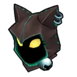

Capuz do Gatuno
Chapéu de ladino · Tier 11 · Nível 34
Tem um design limpo e acolchoado, sem falar da visão noturna. O único problema é o sininho...
Atributos
Defesa
300
Vida
19
Economia
Valor
1.650.000
Tempo de fabricação
12h 40min
XP do comerciante
115.000
Trabalhadores: Alfaiate 27, Mestre 23, Ferreiro 20
Receita


Marcos do projeto
6
Tempo de fabricação -20%
16
-71 Couro
28
Valor +25%
45
Qualidade exigida do componente 2 -1
70
Chance de qualidade +1